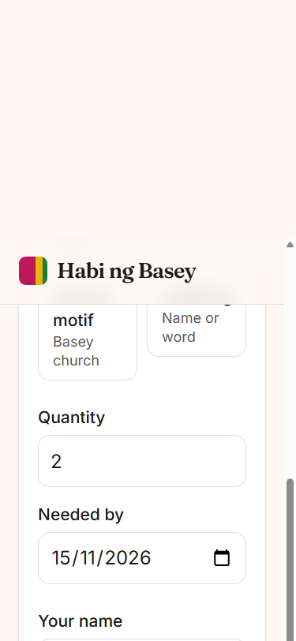
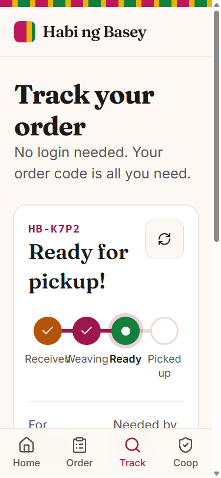

Basey, Samar · rSCENE 2026 AI Vibe Coding Challenge
Habi ng Basey
Order a handwoven banig in under a minute and track it with a short code, so the weavers' coop fills orders without lost texts and missed dates.
Scan to try it live
The problem
- Orders come by Messenger, text and walk-in.
- Balikbayan pickup dates get missed.
- Basey is the Banig Capital of the Philippines. [VERIFY]
The solution
- Buyer orders, no login, gets a code.
- Officer sorts by date, advances in a tap.
- Buyer tracks by code. Phones stay private.



Built with AI, steered by a human
Every step is logged in AI_LOG.md. The AI wrote the code. The human made the calls.
1h33mfrom idea to live URL
3 + 1core features plus a stretch goal, all browser-tested
220 → 111KB landing bundle after the AI perf audit
0passwords or secrets handled by the AI
Claude CodeAgentic coder: spec, scaffold, features, fixes,
git, deploy checks.
ui-reviewer subagentScored the UI 7/10 in a real browser,
which led to 8 fixes.
perf-auditor subagentFound the lazy-route and bundle fixes
that halved the landing JS.
Playwright MCPWalked every acceptance check at 375px and
1280px.
Context7 + ui-ux-pro-maxCurrent library docs and a
generated design system.
Human decisionsChose the idea, replaced the AI auth design, banned unverified claims, kept the password away from the AI.
4-hour clock
0:10Spec + critique
0:24Scaffold + design system
1:33Live on Vercel
1:36Order form
1:56Board + tracking
2:11Verified end to end
2:17Polish + perf
Impact. Status texts become self-serve, and overdue orders are flagged. Assumed ~30 texts a day. [VERIFY]
Next. SMS when ready, photo of the finished banig, then the same app for other craft coops.